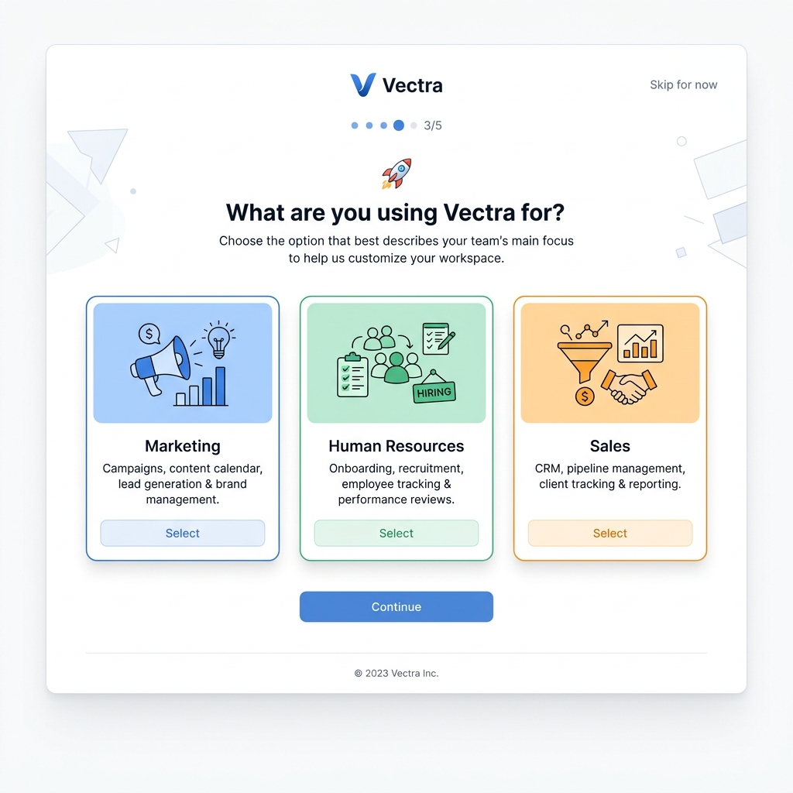
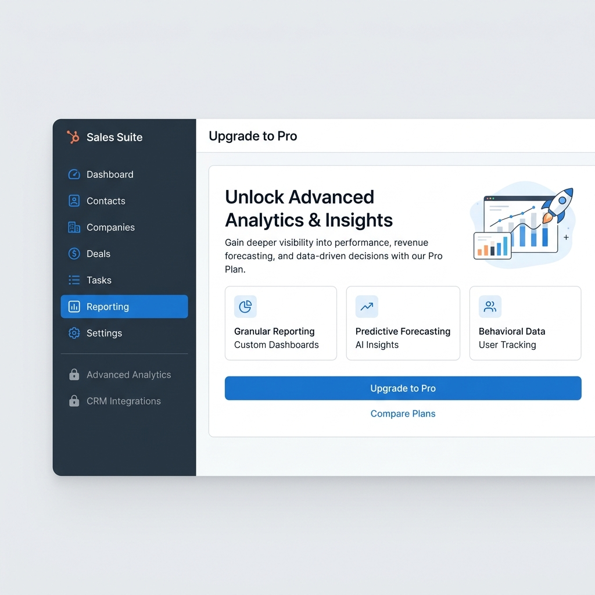
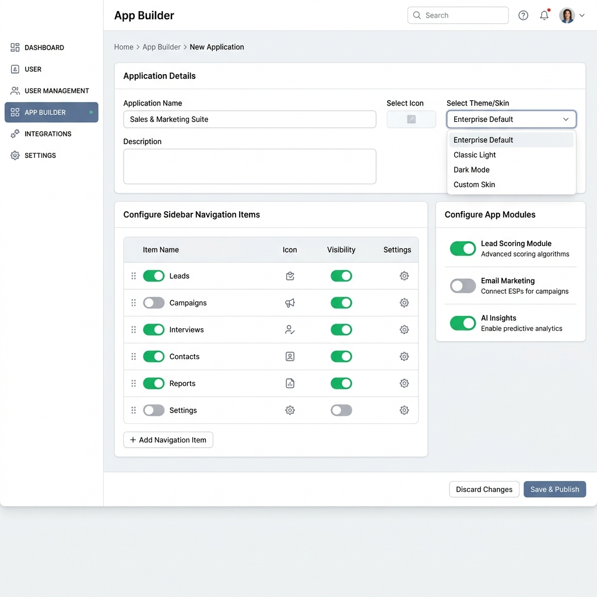

Что делают Monday, ClickUp, HubSpot и Salesforce — и какие из этих практик стоит перенести в Pitch Avatar.
Лидеры рынка решают конфликт «мощность против простоты» двумя приёмами, которые работают в связке. Это и есть основа рекомендаций для Pitch Avatar.
Спросить о цели один раз при регистрации и записать Use Case в профиль. Дальше продукт сам подстраивает интерфейс — пользователь не выбирает «режимы» вручную.
Единое ядро данных, поверх которого включаются и выключаются модули. Лишнее скрыто; сложное — за «замочком» с тизером апгрейда.
Pitch Avatar — мощный продукт. Но один и тот же интерфейс пугает новичка и тормозит эксперта. Как продать ценность каждой аудитории, не утопив её в функциях?
Оба продукта превращают первый экран в инструмент сегментации — и используют ответ для маршрутизации пользователя по правильной воронке.
Обязательный вопрос при регистрации: «Для чего вы будете использовать платформу?». Ответ записывается в профиль.
Кастомные лендинги пробрасывают UTM-параметры и предзаполняют ответы, пропуская лишние шаги онбординга.
Self-serve trial для малых команд; Enterprise-трафик перенаправляется на Demo с участием sales.

«What are you using … for?» — выбор роли вместо тура по функциям.
Marketing / HR / Sales — каждая ведёт к своему преднастроенному рабочему пространству.
Шаг 3 из 5 + «Skip for now»: ощущение контроля и низкий порог входа.
Единое ядро, разделённое на Hubs. Недоступное не удаляется из интерфейса, а превращается в точку продажи.
Разделение на Marketing, Sales и Service Hubs поверх общей базы контактов и сделок.
Ненужные функции либо скрыты, либо помечены иконкой «замочка» — интерфейс остаётся чистым.
Клик по заблокированной функции открывает Demo/Upgrade — Progressive Disclosure как канал продаж.

Пользователь видит только то, что ему доступно и нужно прямо сейчас.
Advanced Analytics, CRM Integrations остаются на виду как тизеры.
Ценность апгрейда показана списком фич + явный CTA и «Compare Plans».
Одно ядро базы данных, поверх которого админ собирает разные приложения под HR, Sales и Marketing — без кода.
Переключение между HR / Sales / Marketing внутри одного ядра — у каждой роли свой «App».
Меняется навигация, Home Page и доступные Actions — под задачи конкретной роли.
Видимость меню и дашбордов настраивается галочками/тумблерами в админке.

Выбор оформления: Enterprise Default, Classic Light, Dark, Custom Skin.
Тумблеры видимости пунктов, drag-and-drop порядок, иконки и настройки.
Включение/выключение модулей (Lead Scoring, AI Insights) + Save & Publish.
| Механика | Monday / ClickUp | HubSpot | Salesforce | → Pitch Avatar |
|---|---|---|---|---|
| Старт | Обязательный survey о цели | Выбор Hub | Выбор App | Use Case в БД при регистрации |
| Конфигурация UI | Шаблоны под ответ | Модули Hub'ов | App Builder (no-code) | Тумблеры модулей (ClickApps) |
| Сложное / платное | Перевод на Demo | «Замочки» + upsell | Права и профили | «Замочки» с тизером апгрейда |
| Кто настраивает | Продукт автоматически | Пользователь / админ | Админ галочками | Админ — без разработки |
| Безопасность | — | Серверная проверка тарифа | RLS / профили | UI-скрытие + 403 на бэкенде |
Use Case записываем в БД при регистрации. URL/лендинг служит только триггером, а не источником правды.
UI-скин — это набор тумблеров. Выключили «Лидогенерацию» — она исчезает везде, консистентно.
Скрываем самое сложное, но оставляем «ключи» к апгрейду — «замочки» вместо пустого места.
Скрытие в UI всегда подкреплено защитой эндпоинтов (403 Forbidden). UI — это удобство, не безопасность.
use_case в профиле + проброс UTMpitch-avatar-admin.